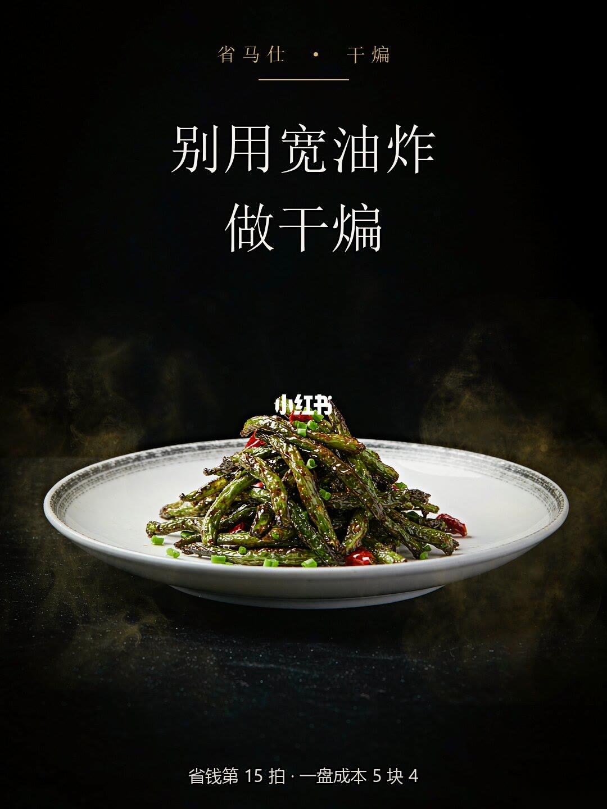
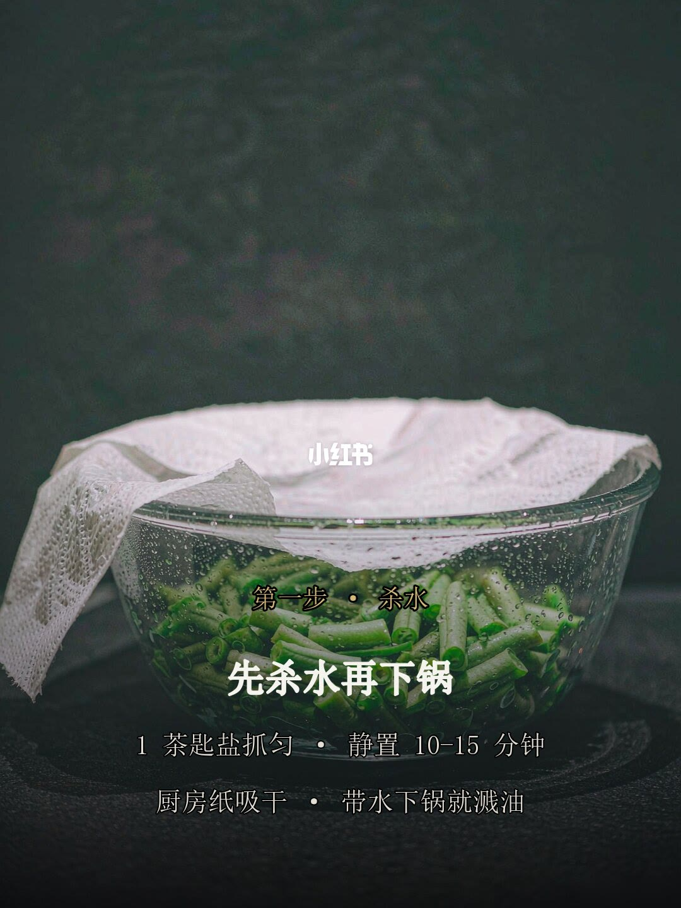
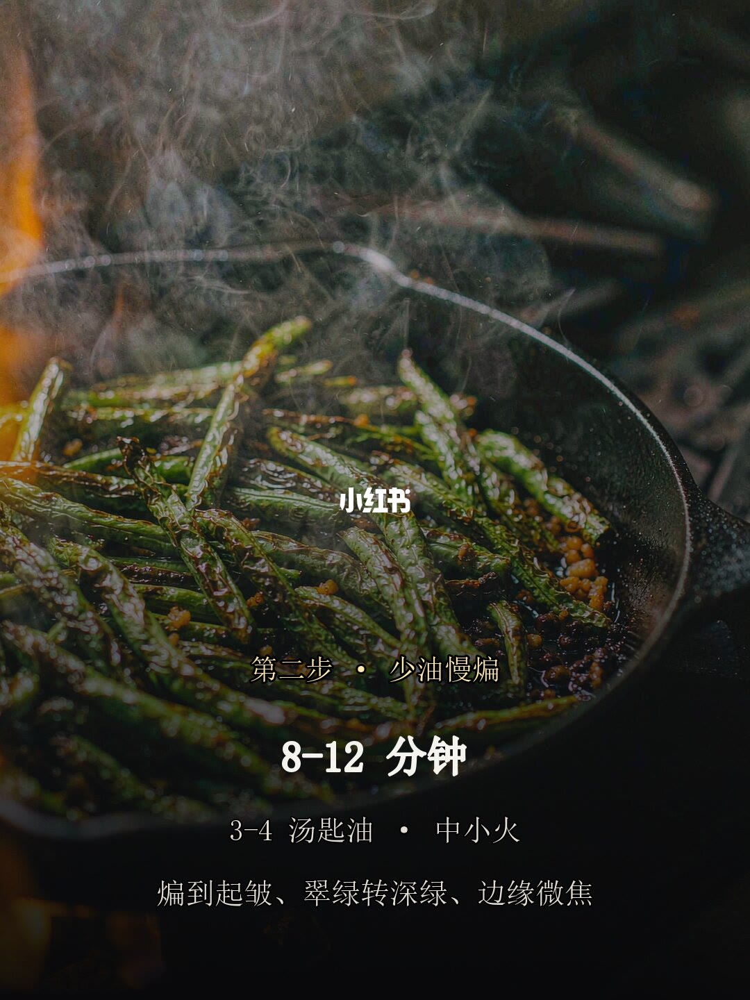
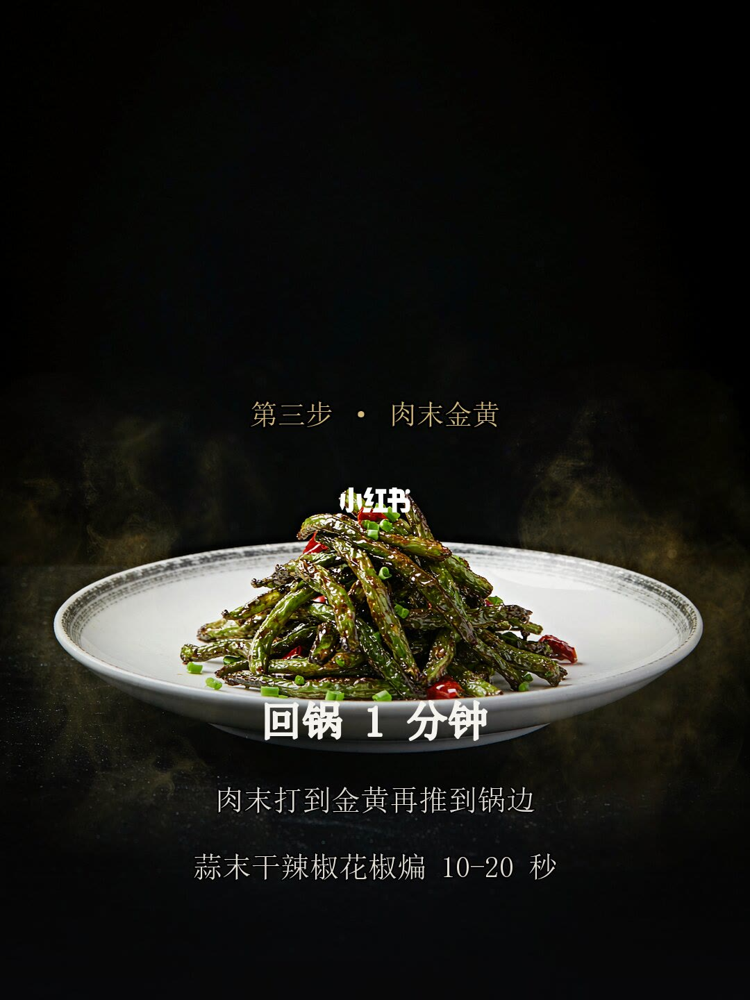
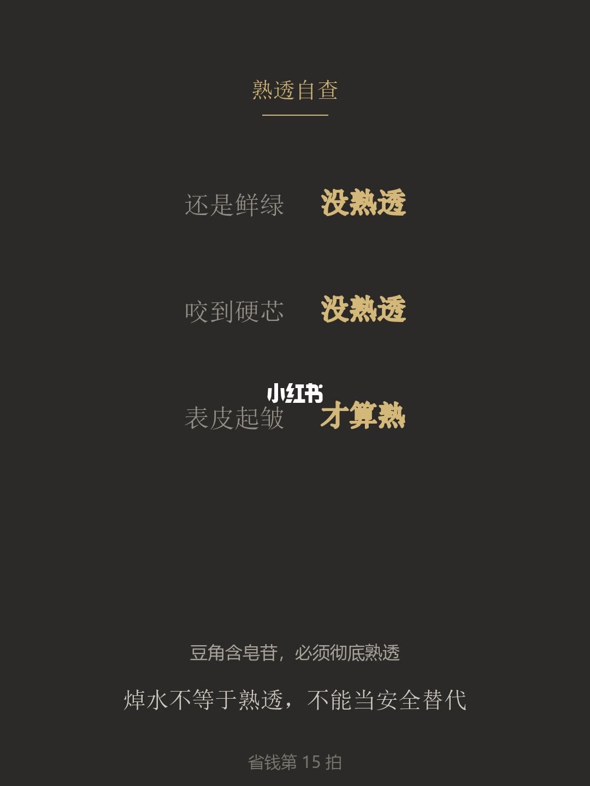
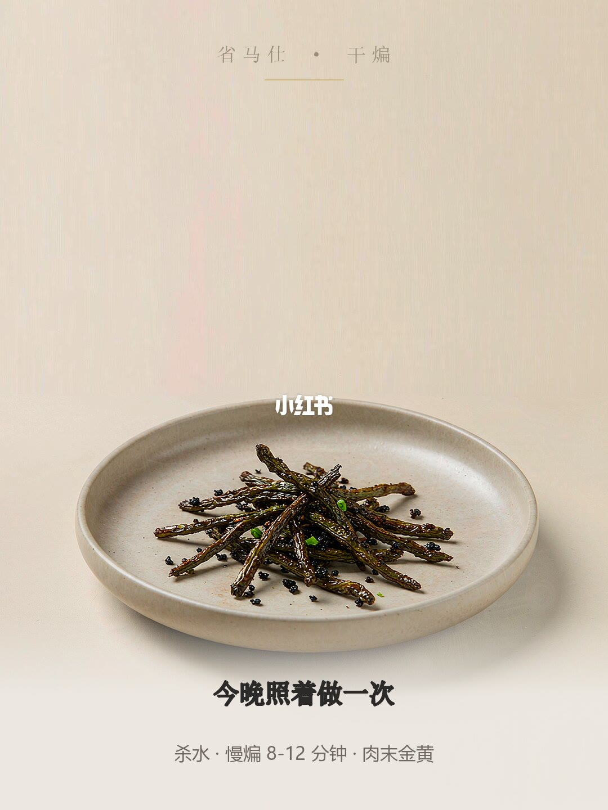

图文实录 · 小红书 · 糯咪不糯米
干煸豆角别用宽油炸，中小火慢煸 8-12 分钟
这组图把「干煸」从宽油炸里拉出来：先把豆角里的水逼干，再用 3–4 汤匙油、中小火煸 8–12 分钟，直到皮皱、色转深绿、没有硬芯。
1/6
封面先否定宽油
黑底成品照上，大字是「别用宽油炸 / 做干煸」。角标写「省钱第 15 拍 · 一盘成本 5 块 4」。豆子已经起皱，拌着红椒和葱花。

2/6
第一步：杀水
切段的豆角加 1 茶匙盐抓匀，静置 10–15 分钟，再用厨房纸吸干。图上写：带水下锅会溅油。文案还补了用量：豆角 300 克。水不吸干，锅温一掉，煸的时间会被拉长。

3/6
第二步：少油慢煸
3–4 汤匙油，中小火，8–12 分钟。判断标准写在画面上：起皱、翠绿转深绿、边缘微焦。文案补了一句：火大就焦，油多就泡，不叫煸。

4/6
第三步：肉末打到金黄
画面写「回锅 1 分钟」。肉末打到金黄再推到锅边；蒜末、干辣椒、花椒煸 10–20 秒。文案把量写全了：肉末 80 克，中火打到发白成沫再转金黄。刚变色就盛出，豆角吸不到肉香。香料多煸 10 秒，蒜会糊。生抽、糖、盐沿锅边下，大火翻 1 分钟，糖用来提鲜、压豆腥。

5/6
熟透自查
还是鲜绿，没熟透。咬到硬芯，没熟透。表皮起皱，才算熟。图上写豆角含皂苷，必须彻底熟透；焯水不等于熟透，不能当安全替代。文案还提到植物血凝素，并给了三条一起看：起皱、转深绿或边缘微焦、掐下去没有硬芯。

6/6
收成一句
末页把流程收成「杀水 · 慢煸 8–12 分钟 · 肉末金黄」，并写「今晚照着做一次」。

汇总
错在火候，不在多倒油
宽油快炒两分钟会留下不皱的皮和硬芯。可用的顺序是杀水、少油慢煸、肉末到金黄再合炒。熟的标准在第 5 页，不看钟看皱、深和没有硬芯。皂苷和植物血凝素是作者的安全提醒，这组图没有给出中毒剂量。5.4 元是这一盘的成本说法。肉末用猪还是牛，作者留在评论里，图上没有定。